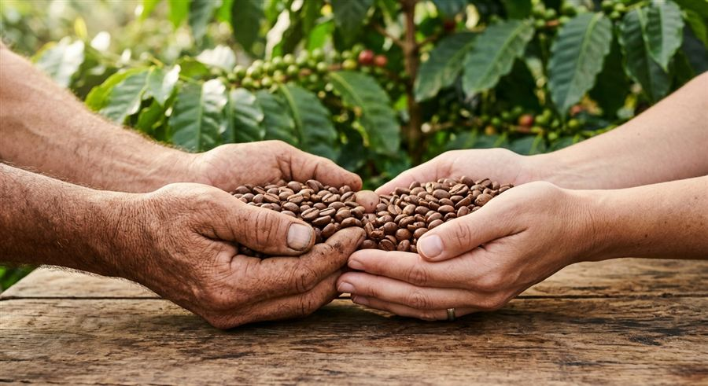

Nossa Missão
Servir cafés especiais com excelência, promovendo o consumo consciente, a redução de resíduos e a valorização dos pequenos produtores e trabalhadores locais.
A Cafeteria Aroma de Café nasceu de um sonho simples: provar que é possível servir um café especial de altíssima qualidade cuidando das pessoas e do planeta ao mesmo tempo. Percebemos que uma simples pausa para o café pode transformar o dia de quem bebe e a vida de quem produz.
Desde o primeiro dia, decidimos fazer diferente. Trabalhamos em parceria direta com pequenos produtores rurais locais, garantindo grãos selecionados com origem rastreável e comércio justo. Além disso, toda a nossa equipe é formada por moradores do próprio bairro, fortalecendo a economia local e gerando oportunidades perto de casa.
Aqui, cada detalhe importa: dos copos biodegradáveis à compostagem da borra de café, buscamos inspirar nossos clientes a praticarem o consumo consciente dentro e fora da cafeteria.

Os princípios que guiam nossas escolhas da fazenda até a sua xícara.
Servir cafés especiais com excelência, promovendo o consumo consciente, a redução de resíduos e a valorização dos pequenos produtores e trabalhadores locais.
Ser referência como cafeteria sustentável e inclusiva, inspirando outras empresas e consumidores a adotarem hábitos que preservem o meio ambiente.
Sustentabilidade na prática: Zero desperdício e respeito à natureza.
Impacto social local: Comércio justo e valorização da comunidade.
Acessibilidade e inclusão: Um espaço acolhedor para todas as pessoas.
O site Aroma de Café é um projeto acadêmico desenvolvido na disciplina de Front-End, sob orientação do Professor Paulo Fratta. Nosso objetivo é demonstrar, por meio de uma cafeteria fictícia com estrutura semântica em HTML5, CSS3 e recursos de acessibilidade, como a tecnologia e a comunicação podem conscientizar a sociedade sobre sustentabilidade e responsabilidade social.
Ednalvo Jose da Silva, Lucas Santos Silva, Renan Lopes, Felipe Jun, Gabriel Camilo, Rhian Khelv, Priscila da Silva Souza e Geovane Santos.
Conheça nossas bebidas preparadas com grãos selecionados de pequenos produtores locais.